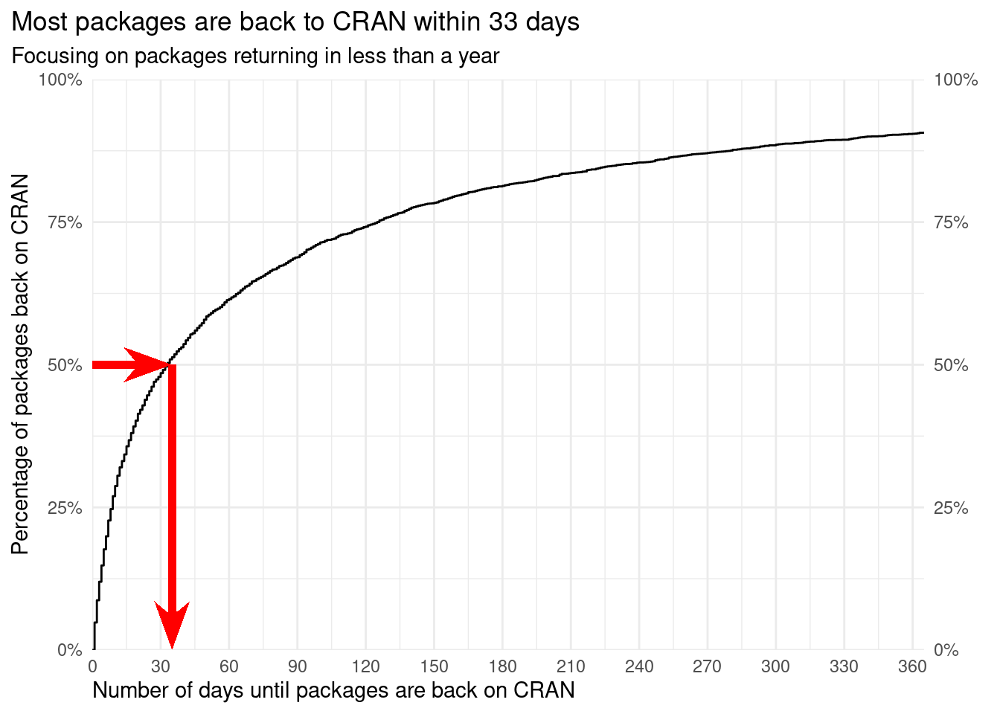
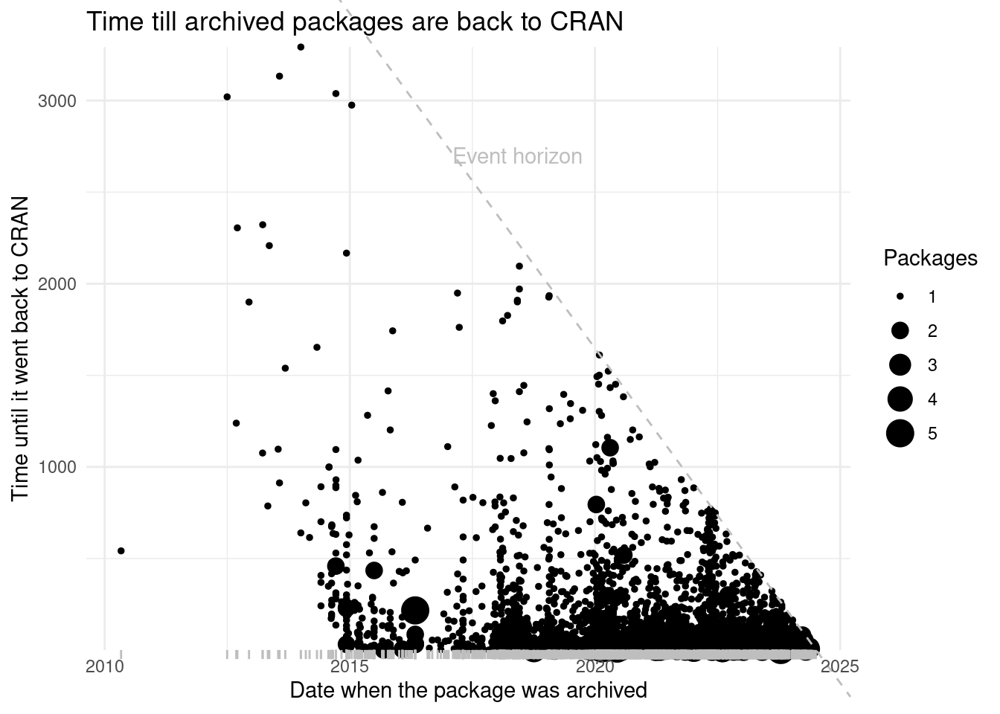

#> times_archived packages min q1 mean median q3 max
#> 1 1 3654 1 days 9 days 121 days 33 days 120 days 3292 days
#> 2 2 771 1 days 8 days 91 days 27 days 86 days 1949 days
#> 3 3 203 1 days 6 days 80 days 22 days 76 days 882 days
#> 4 4 66 1 days 9 days 65 days 22 days 53 days 652 days
#> 5 5 16 1 days 3 days 24 days 13 days 31 days 93 days
#> 6 6 3 17 days 22 days 30 days 27 days 36 days 45 daysStudy: Many Archived Packages Return to CRAN
CRAN packages are archived all the time, but a large portion of them eventually gets fixed and return to CRAN. Using public data available from different resources1 on CRAN, we have found that 36% of the archived packages get unarchived at some point (Revilla 2022). The median time for these packages to return to CRAN is ~33 days.
Analysis
Summary of how long it takes packages to be unarchived
Return time for packages archived only once in their lifetime

Cumulative number of archived packages over the years

Days to return versus date when archived

Distribution of number of days for packages to return to CRAN

References
Revilla, Lluís. 2022. “Reasons Why Packages Are Archived on CRAN.” Personal blog. https://llrs.dev/post/2021/12/07/reasons-cran-archivals/.
Footnotes
Data sources used are
tools:::CRAN_current_db(),tools:::CRAN_archive_db(), and PACKAGES.in.↩︎